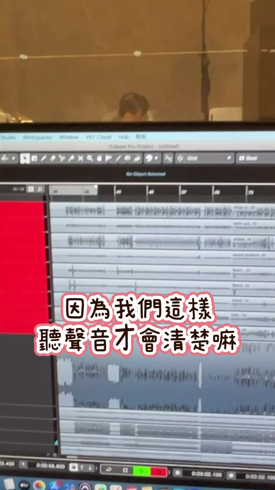

板橋錄音與拍攝｜爵士鼓 Cover
獨立控制室隔玻璃聽得清楚；每間教室線路已打通，錄鼓可收多軌。
錄鼓、拍一支屬於自己的爵士鼓 Cover，是慕尼克音樂板橋校區很擅長的事。教室光線與擺設本來就為上課設計，拍起來乾淨好看；曾有家長是在網路上先看到教室環境覺得很喜歡，先詢問 Cover 的報價，後來才決定來上課——我們很高興，空間本身就能讓人安心踏出第一步。
為什麼在這裡錄、比較省心
獨立控制室，隔著玻璃聽得清楚
錄音時人在控制室，隔著玻璃看鼓房。這樣聽的是錄進電腦裡的聲音，不會同時聽到現場原鼓聲而判斷不清，混音與調整也比較有把握。
裝潢時線路已打通，教室之間可以互相錄音
整修時就把各教室的線路打通了，所以不一定只能在同一間房完成；需要時，控制室與各教室之間可以互相錄音，安排更彈性。
實際錄鼓可以收九軌分軌
一次可以把大鼓、小鼓、筒鼓、overhead 等分開收進多軌（影片示範為九軌），之後再細調各顆鼓的比例與遠近，比一支手機收音更有後製空間。畫面中可看到 Cubase 專案正在跑多軌波形。
每一間教室都可以錄音
不只獨立鼓房，連電子鼓教室也配有錄音介面。想留下課堂練習、比賽前的定稿，或正式拍一支 Cover，都在熟悉的教室完成。
練鼓的時候，幾乎都有老師在
需要調整鼓組、接線、播音樂，或過程中有狀況，可以直接問現場的老師協助 setting。
聽得清楚，也不必把喇叭開很大
鼓有適度弱音、教室有適度吸音，監聽喇叭不用開很大聲也能聽清楚伴奏；音量在教室裡就能自己調到舒服的大小。控制室也可改用耳機仔細聽（影片可見）。
耳機可以從 mixer 或喇叭用有線接上，教室備有常用接線，不必另外測藍牙連線穩不穩。很多練鼓空間沒有常設錄音設備，練習的人往往得自己帶介面與線材。在慕尼克，每間教室都能錄，把心力放在打鼓與拍片就好。

我們有哪些
- 獨立隔音鼓房配置 TAMA Superstar Classic 20 吋 真鼓，並經錄音窗連到對面的控制室。
- 房內備有監聽喇叭、錄音介面與麥克風；老師可協助錄音、錄影、打光與混音，費用依需求另報。
- 各教室配置錄音介面與監聽喇叭，課程可支援同步錄音。
- 老師端常用 Cubase、Logic Pro 等專業軟體協助編曲與錄音後製（依師資專長；本支幕後影片畫面可見 Cubase 專案）。
- 控制室備有監聽耳機，並可見監聽校正設備。
在慕尼克錄製的作品
饅頭老師一手包辦音樂與影像製作的單曲《無心承諾》，在慕尼克錄製，已上架收聽。
學生爵士鼓 Cover 展示
想拍 Cover、或想了解錄音怎麼安排？
Cover 報價歡迎加 LINE 詢問（依曲目、時數與後製需求說明）。也可撥打市話 02-8965-2288。
非營業時間或老師帶學生外出時，市話可能無人接聽，請改加 LINE。
常見問題
為什麼要進控制室錄，而不是只在鼓房用喇叭聽？
隔著玻璃聽的是錄進去的聲音，不會跟現場原鼓聲疊在一起，判斷會比較清楚。
一定要整組人擠在同一間才能錄嗎？
裝潢時線路已打通，各教室之間可以互相錄音，安排比較彈性。
錄鼓是幾軌？
影片示範為九軌分軌（大鼓、小鼓、筒鼓、overhead 等分開收），後製時較好調。
只有鼓房能錄音嗎？
不是。每一間教室都可以錄音，電子鼓教室也有錄音介面。
Cover 怎麼報價？
歡迎加 LINE 詢問，我們依你的需求說明。